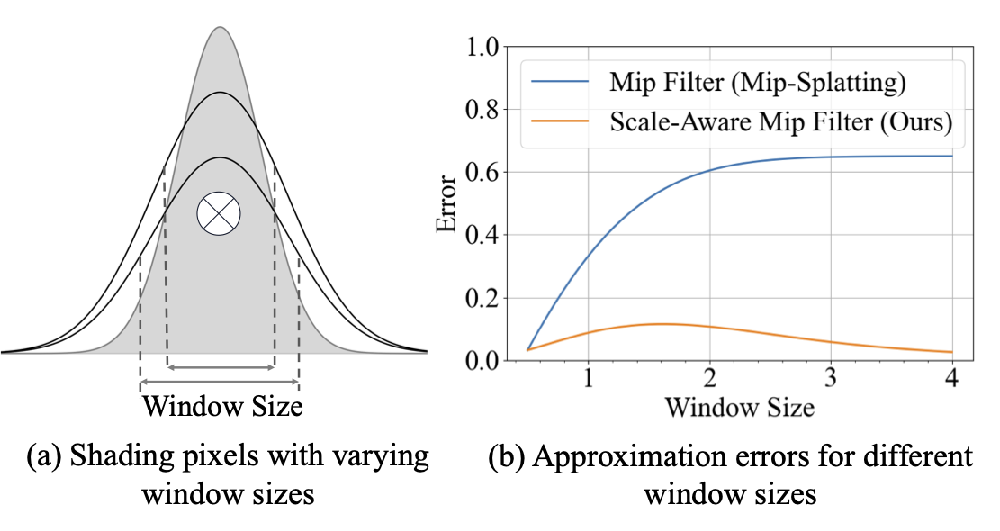
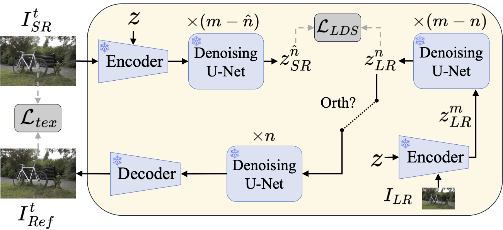
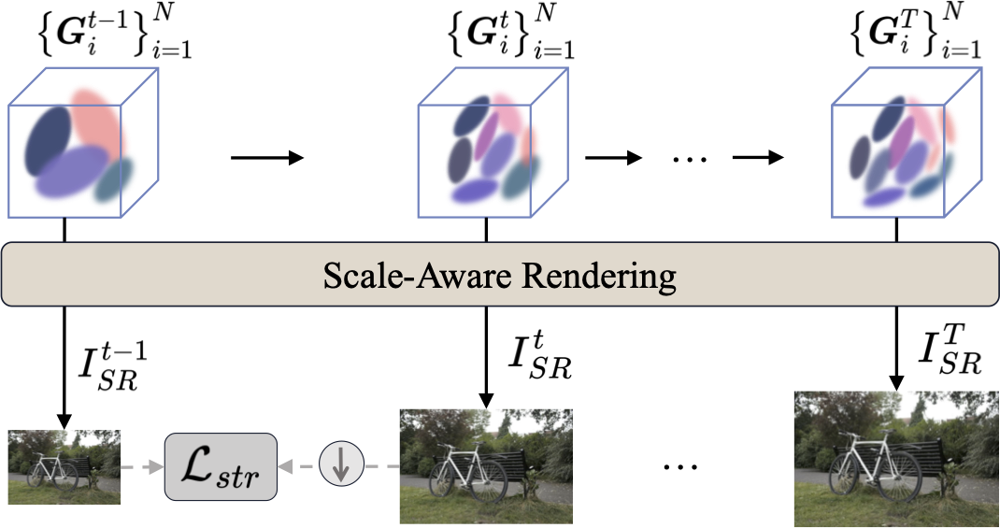
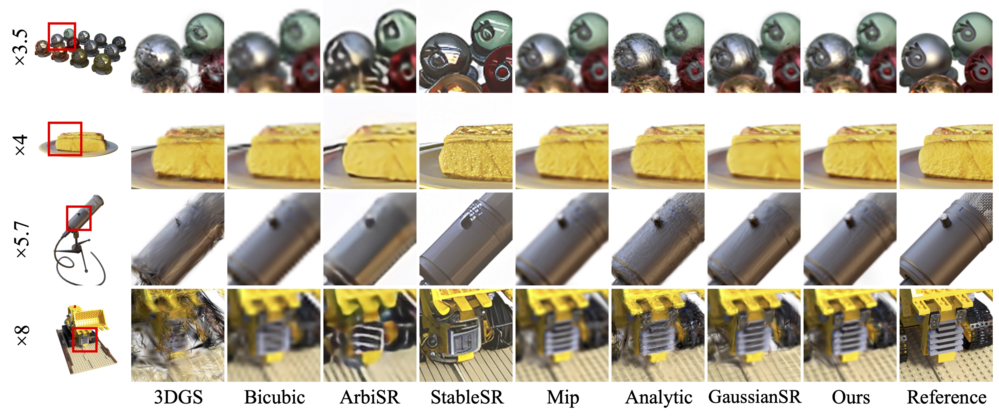
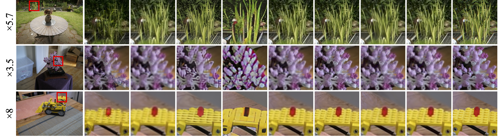
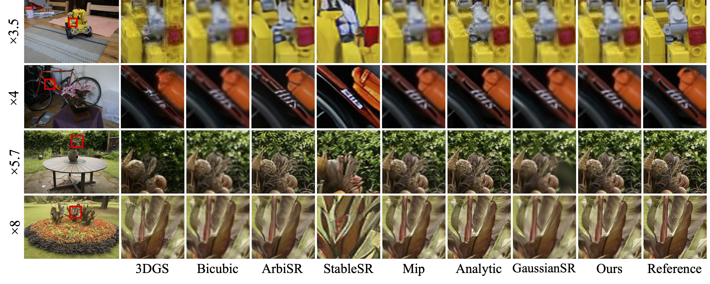

Existing 3D Gaussian Splatting (3DGS) super-resolution methods typically perform high-resolution (HR) rendering of fixed scale factors, making them impractical for resource-limited scenarios. Directly rendering arbitrary-scale HR views with vanilla 3DGS introduces aliasing artifacts due to the lack of scale-aware rendering ability, while adding a post-processing upsampler for 3DGS complicates the framework and reduces rendering efficiency. To tackle these issues, we build an integrated framework that incorporates scale-aware rendering, generative prior-guided optimization, and progressive super-resolving to enable 3D Gaussian super-resolution of arbitrary scale factors with a single 3D model. Notably, our approach supports both integer and non-integer scale rendering to provide more flexibility. Extensive experiments demonstrate the effectiveness of our model in rendering high-quality arbitrary-scale HR views (6.59 dB PSNR gain over 3DGS) with a single model. It preserves structural consistency with LR views and across different scales, while maintaining real-time rendering speed (85 FPS at 1080p).
Select methods for left and right videos. Drag the slider to compare the results.

Changing output resolution alters image-plane sampling density. A lower sampling rate can fall below the Nyquist frequency and cause aliasing. To align the Gaussian signal with the pixel area, we propose 3D Scale-Aware Smoothing Filter and 2D Scale-Aware Mip Filter to adjust the Gaussian bandwidth and per-pixel integration window, respectively.

For Arbi-3DGSR, only input LR views are available. Generative priors from pretrained diffusion models are leveraged to constrain fine details in the rendered HR views.

To remain structurally consistent with LR views, training is divided into multiple stages to progressively accommodate various scale factors.



@article{zeng2025arbitrary,
title={Arbitrary-Scale 3D Gaussian Super-Resolution},
author={Zeng, Huimin and Bai, Yue and Fu, Yun},
journal={arXiv preprint arXiv:2508.16467},
year={2025}
}